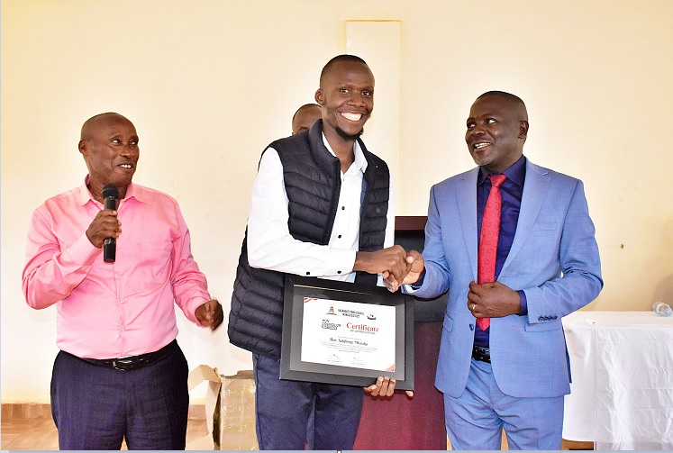
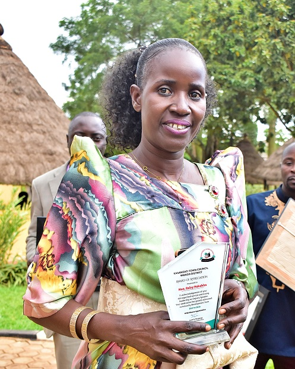
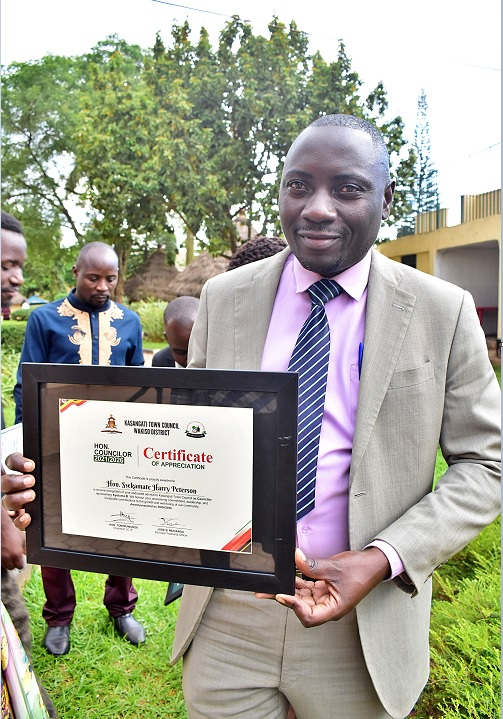
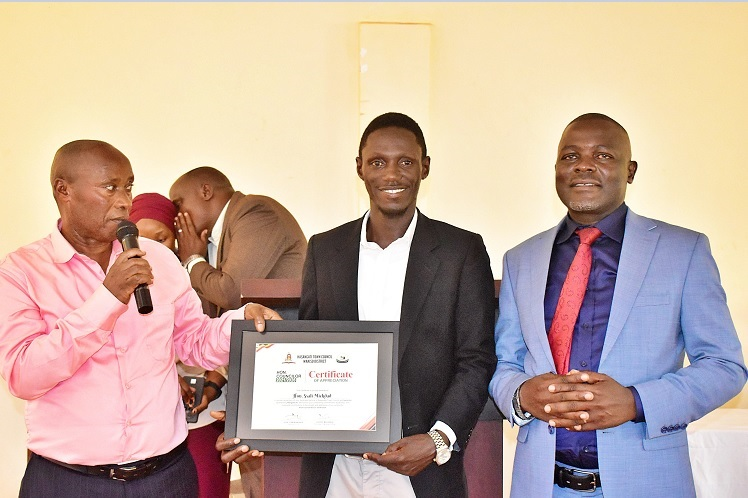
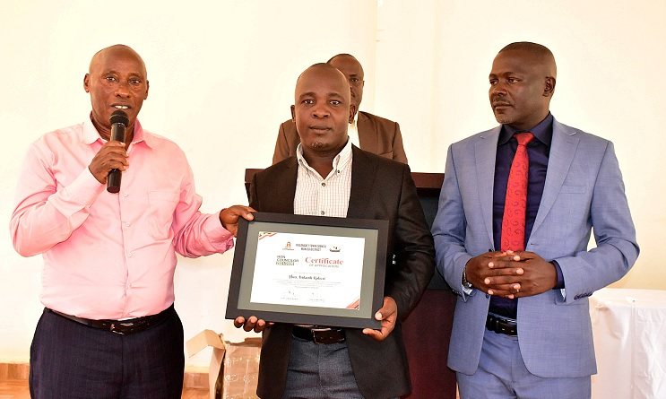

The 2021–2026 political term has officially drawn to a close. On Thursday, April 30, the Kasangati Town Council—comprising the Mayor, the Executive, and the Technical Team—convened for their final historic session. In a room filled with both nostalgia and duty, the council approved the financial estimates presented by Hon. Kabunga Batulumayo for the 2026/2027 financial year, ensuring the incoming leadership has a clear path forward.
The session was graced by high-ranking dignitaries, including the Buganda Sub-County Chief, Ssalongo Kigonya, and the Kasangati Deputy RDC, Haji Juma Kigongo. Both leaders praised the outgoing members for their service, offering a mixture of praise for successes and patriotic advice for their future endeavors.
This outgoing council of 65 members faced a tumultuous five years—starting with internal friction, scholarship-related leadership shifts, and the long-distance governance of Hon. Patrick Mukisa (Speaker) from Canada. Yet, as the final gavel fell, the focus shifted to the legacies left behind in the nine wards of Kasangati.
SERVICE SPOTLIGHTS: THE COUNCILORS' VOICES

Hon. Nakibinge Mubaraka
Representing Kyetume A | Best Debater 2024"I thank the people of Kyetume for trusting me when I was just a Senior Six leaver. I was young, but this council nurtured me. I am proud of learning local government law and working together with LC1 chairpersons to create By-Laws that would solve issues effectively."

Hon. Nakabira Daisy
Deputy Speaker / Speaker | Representing Kyankima & Gayaza A"When I took over the Speaker's chair, I was timid and faced many doubters. But I grew stronger. In Kyankima, we focused on youth unemployment by securing vocational training in metal fabrication and hairdressing for our people."

Hon. Nakibinge Michael
Representing Wattuba Village"My pride is the construction of Staff quarters at Wattuba Health Centre III. We now serve 7,000 patients a quarter and have been monitoring to see effective service delivery. We also expanded Wattuba UMEA Primary school to accommodate our growing population."

Hon. Harry Peterson Ssekamate
Representing Kyetume B, Bulamu Ward | (Ssegulira Enume)"I am grateful to the people of Kyetume B who voted tirelessly for me. Moving together with our community in sports and seminars has been a joy. I especially thank Mayor Tom Muwonge and our Town Clerks—Mr. Lutalo, Ms. Nakyaze, and Mr. B. Muganga—for their tireless technical support during this historic term."

Hon. Mickdad Ssali
Representing Nangabo A"I am proud of buying th garbage truck. And overcoming poor garbage disposal in my area. I thank my community members who have always participayed in community work when service delivery would delay."

Hon. Bidandi Robert
Works Committee Leader | Lubatu – Kizingiza"We maintained the roads for our traders and supported Namalere Hospital with tent and chairs. My goal now is to boost zero-grazing agriculture to help our people fight poverty."
The stories of service extend to every corner—from Councilor Nakito Ritah’s sanitary wear initiatives in Kiwalimu to Councilor Bukenya Prince Mark’s women empowerment projects in Kabanyoro. While the new council will be smaller, with fewer than 40 members, the impact of these 65 individuals remains written on the hearts of the Kasangati people.